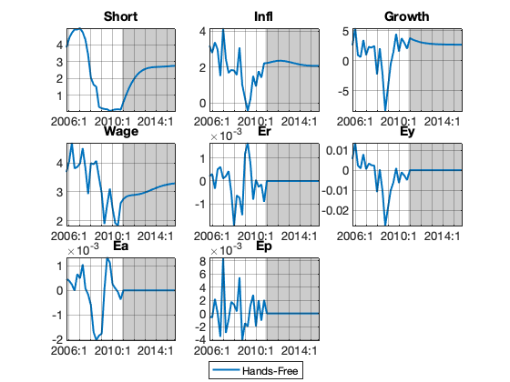
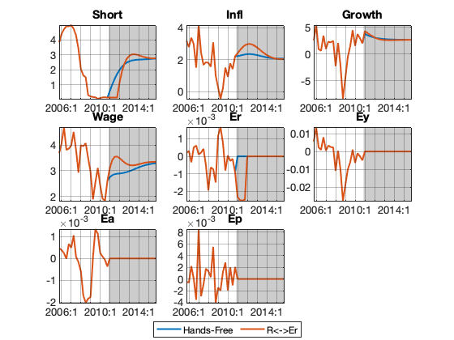
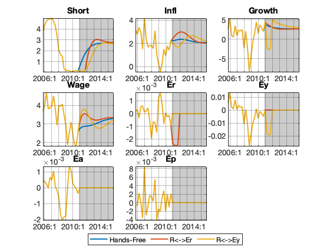
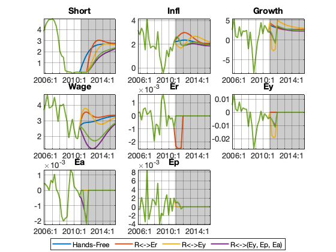
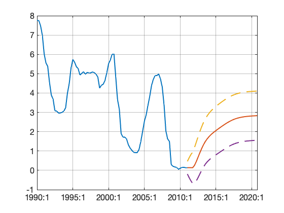
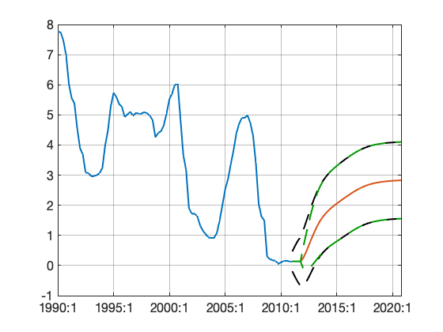

# Create Conditional Forecast Scenarios #
Contents
## Clear Workspace ##
close all
clear
Load Model and Databank
load mat/estimate_params.mat mest load mat/filter_hist_data.mat f
Define Dates and Clip Databank
endHist = qq(2010,4);
startFcast = endHist + 1;
endFcast = endHist + 40;
startPlot = endHist - 20;
plotRange = startPlot : endHist+20;
d = databank.clip(f.mean, -Inf, endHist);
listToPlot = {
'Short'; 'Infl'; 'Growth'; 'Wage'
'Er'; 'Ey'; 'Ea'; 'Ep'
};
Hands-Free Scenario
g0 = simulate( ... mest, d, startFcast:endFcast, ... 'PrependInput=', true ... ); dbplot( ... g0, plotRange, listToPlot ... , 'Tight=', true ... , 'Highlight=', startFcast:endFcast ... ); visual.hlegend( ... 'Bottom' ... , 'Hands-Free' ... );
Exogenize Policy Rate, Endogenize Policy Shocks
p1 = Plan(mest, startFcast:endFcast); p1 = exogenize(p1, startFcast+(0:3), 'R'); p1 = endogenize(p1, startFcast+(0:3), 'Er'); d.R(startFcast+(0:3)) = d.R(endHist); g1 = simulate( ... mest, d, startFcast:endFcast, ... 'Plan=', p1, ... 'PrependInput=', true ... ); dbplot( ... g0 & g1, plotRange, listToPlot ... , 'Tight=', true ... , 'Highlight=', startFcast:endFcast ... ); visual.hlegend( ... 'Bottom' ... , 'Hands-Free' ... , 'R<->Er' ... );
Exogenize Policy Rate, Endogenize Demand Shocks
p2 = Plan(mest, startFcast:endFcast); p2 = exogenize(p2, startFcast+(0:3), 'R'); p2 = endogenize(p2, startFcast+(0:3), 'Ey'); g2 = simulate( ... mest, d, startFcast:endFcast, ... 'Plan=', p2, ... 'PrependInput=', true ... ); dbplot( ... g0 & g1 & g2, plotRange, listToPlot ... , 'Tight=', true ... , 'Highlight=', startFcast:endFcast ... ); visual.hlegend( ... 'Bottom' ... , 'Hands-Free' ... , 'R<->Er' ... , 'R<->Ey' ... );
Conditioning with Multiple Shocks
p3 = Plan(mest, startFcast:endFcast, 'Anticipate=', true, 'Method=', 'Condition'); p3 = exogenize(p3, startFcast+(0:3), 'R'); p3 = endogenize(p3, startFcast+(0:3), {'Ey', 'Ep', 'Ea'}); g3 = simulate( ... mest, d, startFcast:endFcast, ... 'Plan=', p3, ... 'PrependInput=', true ... ); % Switch of Ea shock in the first two periods p4 = p3; p4 = assignSigma(p4, startFcast+(0:1), 'Ea', 0); g4 = simulate( ... mest, d, startFcast:endFcast, ... 'Plan=', p4, ... 'PrependInput=', true ... ); dbplot( ... g0 & g1 & g2 & g3 & g4, plotRange, listToPlot ... , 'Tight=', true ... , 'Highlight=', startFcast:endFcast ... ); visual.hlegend( ... 'Bottom' ... , 'Hands-Free' ... , 'R<->Er' ... , 'R<->Ey' ... , 'R<->(Ey, Ep, Ea)' ... );
Forecast Bands - Case 1
Interest rate forecast is tuned in expectations but has uncertainty around
%{ [~, f4] = filter( ... mest, d, startFcast:endFcast, ... 'Init=', d, ... 'Anticipate=', true ... ); figure( ); h = plot([g0.Short, f4.mean.Short+[0, f4.std.Short, -f4.std.Short] ]); return %} expectedMeans = struct( ); expectedMeans.Ey = g3.Ey; expectedMeans.Ep = g3.Ep; expectedMeans.Ea = g3.Ea; [~, f4] = filter( ... mest, d, startFcast:endFcast, ... 'Init=', d, ... 'Override=', expectedMeans, ... 'Anticipate=', true ... ); figure( ); h = plot([g3.Short, f4.mean.Short+[0, f4.std.Short, -f4.std.Short] ]); set(h(3), 'LineStyle', '--'); set(h(4), 'LineStyle', '--');
Forecast Bands - Case 2
Interest rate forecast is tuned to a single point without uncertainty
d.Short(startFcast+(0:3)) = d.Short(endHist); [~, f5] = filter( ... mest, d, startFcast:endFcast, ... 'Init=', d, ... 'Override=', expectedMeans, ... 'Relative=', false, ... 'Anticipate=', true ... ); figure( ); h = plot([g3.Short, f5.mean.Short+[0, f4.std.Short, -f4.std.Short, f5.std.Short, -f5.std.Short] ]); set(h(3), 'LineStyle', '--', 'Color', [0, 0, 0]); set(h(4), 'LineStyle', '--', 'Color', [0, 0, 0]); set(h(5), 'LineStyle', '--', 'Color', [0, 0.6, 0]); set(h(6), 'LineStyle', '--', 'Color', [0, 0.6, 0]); figure( ); h = plot([g3.Infl, f5.mean.Infl+[0, f4.std.Infl, -f4.std.Infl, f5.std.Infl, -f5.std.Infl] ]); set(h(3), 'LineStyle', '--', 'Color', [0, 0, 0]); set(h(4), 'LineStyle', '--', 'Color', [0, 0, 0]); set(h(5), 'LineStyle', '--', 'Color', [0, 0.6, 0]); set(h(6), 'LineStyle', '--', 'Color', [0, 0.6, 0]);